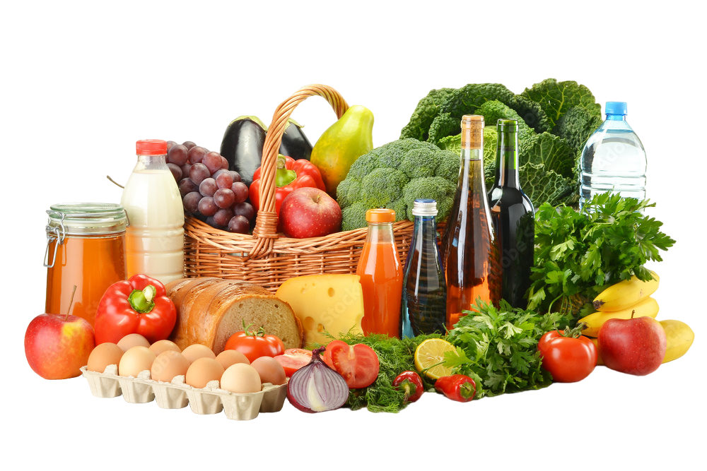

<section class="container">
   
    <div class="content">
        <span>Organic Fresh Products</span>
        <h3>All you need in one place</h3>
        <button class="home_button">Get Started</button>
    </div>
    <div class="home_img">
        
    </div>
</section>

<section class="banner_container">
    <div class="banner">
        
        <div class="content">
            <h3 class="title2">Special Offer</h3>
            <span class="title1">Upto 45% off</span>
            <button class="banner_button">Checkout</button>
        </div>
    </div>

    <div class="banner" style="background-color: blue;">
        
        <div class="content">
            <p class="title2">Limited Offer</p>
            <span class="title1">Upto 50% off</span>
            <button class="banner_button">Checkout</button>
        </div>
    </div>
</section>

<section class="category">
    <h1 class="heading">Shop by <span style="font-size: 60px; font-weight:bolder;">category</span> </h1>
    <!-- <div class="box_container"> -->
        <div class="category_grid" >
            <div *ngFor="let category of shuffled_categories" class="category ">
                <h3 class="category_name">{{category.name}}</h3>
                
            </div>
        </div>
        <div style="text-align: center;">
            <button class="products_button">View Products</button>
        </div>

     
</section>

<section class="About">
   
    <div class="about">
        <div class="home_img2">
            
        </div>
        <div class="abt_content">
            <h1  class="abt_heading">Why Choose Us?</h1>
            <div class=abt_intro>
                <span>In a world polluted with processed and manufactured products, it is difficult to find organic produce in our markets. </span>
                <span>Freshi Barida has come to fill in this gap and enable people to be able to enjoy a healthy lifestyle!</span>
            </div>
            <div class="about_grid" >
                <div *ngFor="let desc of about_desc; let i = index" class="product" style="margin-right: 30px;">
                    
                    <h2 style="margin-top: 10px; color:#666666; margin-left: 5px;">0{{i+1}}</h2>
                    <div class="abt_info">
                        <div class="desc_title">{{desc.title}}</div>
                        <span class="full_desc">{{desc.description}}</span>
                    </div>
                </div>
            </div>
            <button class="abt_button">View More</button>
        </div>
    </div>
   
   
</section>

